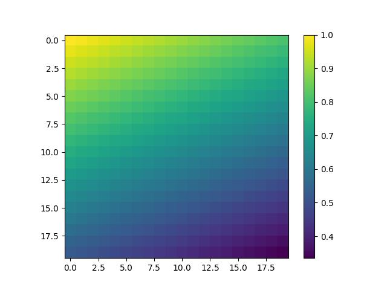
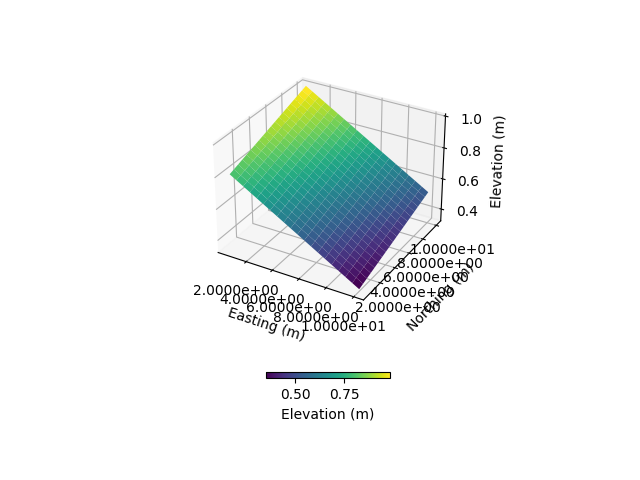

Note
Click here to download the full example code
Meshing from a Digital Elevation Model (DEM)#
Weill, S., et al. « Coupling Water Flow and Solute Transport into a Physically-Based Surface–Subsurface Hydrological Model ». Advances in Water Resources, vol. 34, no 1, janvier 2011, p. 128‑36. DOI.org (Crossref), https://doi.org/10.1016/j.advwatres.2010.10.001.
This example shows how to use pyCATHY object to mesh from a DEM and run the hydrological model.
Estimated time to run the notebook = 5min
# !! run preprocessor change the DEM shape !
# dtm_13 does not have the same shape anymore!
import os
import matplotlib.pyplot as plt
import numpy as np
import pandas as pd
import pyCATHY.meshtools as mt
from pyCATHY import cathy_tools
from pyCATHY.importers import cathy_inputs as in_CT
from pyCATHY.importers import cathy_outputs as out_CT
from pyCATHY.plotters import cathy_plots as cplt
path2prj = "../SSHydro/" # add your local path here
simu = cathy_tools.CATHY(dirName=path2prj, prj_name="meshing_from_Camporese", clear_src=True)
rootpath = os.path.join(simu.workdir + simu.project_name)
Out:
🏁 Initiate CATHY object
clear src files
😟 src files not found
working directory is:/home/ben/Documents/GitHub/BenjMy/pycathy_wrapper/examples/SSHydro/../SSHydro/
📥 Fetch cathy src files
📥 Fetch cathy prepro src files
📥 Fetch cathy inputfiles
the dimension of the mesh is squared (20,20)
dem_mat, str_hd_dem = in_CT.read_dem(
os.path.join(simu.workdir, simu.project_name, "prepro/dem"),
os.path.join(simu.workdir, simu.project_name, "prepro/dtm_13.val"),
)
fig, ax = plt.subplots(1)
img = ax.imshow(dem_mat)
plt.colorbar(img)
simu.show_input(prop="dem")
simu.update_prepo_inputs(
DEM=dem_mat,
# N=np.shape(dem_mat)[1],
# M=np.shape(dem_mat)[0],
)
fig = plt.figure()
ax = plt.axes(projection="3d")
simu.show_input(prop="dem", ax=ax)
simu.create_mesh_vtk(verbose=True)
- 

- 
Out:
🔄 Update hap.in file
🔄 update dem_parameters file
🔄 Update hap.in file
🔄 Update dtm_13 file
─────────────────────────────────────────────────────────────────────────────────────── ⚠ warning messages above ⚠ ────────────────────────────────────────────────────────────────────────────────────────
The parm dictionnary is empty
Falling back to defaults to update CATHYH
This can have consequences !!
───────────────────────────────────────────────────────────────────────────────────────────────────────────────────────────────────────────────────────────────────────────────────────────────────────────
🔄 update parm file
─────────────────────────────────────────────────────────────────────────────────────── ⚠ warning messages above ⚠ ────────────────────────────────────────────────────────────────────────────────────────
['Adjusting TMAX with respect to time of interests requested\n']
───────────────────────────────────────────────────────────────────────────────────────────────────────────────────────────────────────────────────────────────────────────────────────────────────────────
🔄 update dem_parameters file
🍳 gfortran compilation
👟 Run preprocessor
wbb...
searching the dtm_13.val input file...
assigned nodata value = -9999.0000000000000
number of processed cells = 400
...wbb completed
rn...
csort I...
...completed
depit...
dem modifications = 0
dem modifications = 0 (total)
...completed
csort II...
...completed
cca...
contour curvature threshold value = 9.99999996E+11
...completed
smean...
mean (min,max) facet slope = 0.052056253 ( 0.020000000, 0.053851648)
...completed
dsf...
the drainage direction of the outlet cell ( 8 ) is used
...completed
hg...
...completed
saving the data in the basin_b/basin_i files...
...rn completed
mrbb...
Select the header type:
0) None
1) ESRI ascii file
2) GRASS ascii file
(Ctrl C to exit)
->
Select the nodata value:
(Ctrl C to exit)
->
Select the pointer system:
1) HAP system
2) Arc/Gis system
(Ctrl C to exit)
-> ~~~~~~~~~~~~~~~~~~~~~~~~~~~~~~~~~~~~~~~~~~
dem file
min value = 0.335000E+00
max value = 0.100000E+01
number of cells = 400
mean value = 0.667500E+00
writing the output file...
~~~~~~~~~~~~~~~~~~~~~~~~~~~~~~~~~~~~~~~~~~
lakes_map file
min value = 0
max value = 0
number of cells = 400
mean value = 0.000000
writing the output file...
~~~~~~~~~~~~~~~~~~~~~~~~~~~~~~~~~~~~~~~~~~
zone file
min value = 1
max value = 1
number of cells = 400
mean value = 1.000000
writing the output file...
~~~~~~~~~~~~~~~~~~~~~~~~~~~~~~~~~~~~~~~~~~
dtm_w_1 file
min value = 0.515524E+00
max value = 0.100000E+01
number of cells = 400
mean value = 0.607575E+00
writing the output file...
~~~~~~~~~~~~~~~~~~~~~~~~~~~~~~~~~~~~~~~~~~
dtm_w_2 file
min value = 0.000000E+00
max value = 0.484476E+00
number of cells = 400
mean value = 0.392425E+00
writing the output file...
~~~~~~~~~~~~~~~~~~~~~~~~~~~~~~~~~~~~~~~~~~
dtm_p_outflow_1 file
min value = 4
max value = 8
number of cells = 400
mean value = 4.200000
writing the output file...
~~~~~~~~~~~~~~~~~~~~~~~~~~~~~~~~~~~~~~~~~~
dtm_p_outflow_2 file
min value = 0
max value = 9
number of cells = 400
mean value = 6.792500
writing the output file...
~~~~~~~~~~~~~~~~~~~~~~~~~~~~~~~~~~~~~~~~~~
A_inflow file
min value = 0.000000000000E+00
max value = 0.997499787031E+02
number of cells = 400
mean value = 0.388447785378E+01
writing the output file...
~~~~~~~~~~~~~~~~~~~~~~~~~~~~~~~~~~~~~~~~~~
dtm_local_slope_1 file
min value = 0.200000E-01
max value = 0.500000E-01
number of cells = 400
mean value = 0.485000E-01
writing the output file...
~~~~~~~~~~~~~~~~~~~~~~~~~~~~~~~~~~~~~~~~~~
dtm_local_slope_2 file
min value = 0.000000E+00
max value = 0.494975E-01
number of cells = 400
mean value = 0.400930E-01
writing the output file...
~~~~~~~~~~~~~~~~~~~~~~~~~~~~~~~~~~~~~~~~~~
dtm_epl_1 file
min value = 0.500000E+00
max value = 0.500000E+00
number of cells = 400
mean value = 0.500000E+00
writing the output file...
~~~~~~~~~~~~~~~~~~~~~~~~~~~~~~~~~~~~~~~~~~
dtm_epl_2 file
min value = 0.000000E+00
max value = 0.707107E+00
number of cells = 400
mean value = 0.572757E+00
writing the output file...
~~~~~~~~~~~~~~~~~~~~~~~~~~~~~~~~~~~~~~~~~~
dtm_kSs1_sf_1 file
min value = 0.240040E+02
max value = 0.240040E+02
number of cells = 400
mean value = 0.240040E+02
writing the output file...
~~~~~~~~~~~~~~~~~~~~~~~~~~~~~~~~~~~~~~~~~~
dtm_kSs1_sf_2 file
min value = 0.000000E+00
max value = 0.240040E+02
number of cells = 400
mean value = 0.194432E+02
writing the output file...
~~~~~~~~~~~~~~~~~~~~~~~~~~~~~~~~~~~~~~~~~~
dtm_Ws1_sf file
min value = 0.100000E+01
max value = 0.100000E+01
number of cells = 400
mean value = 0.100000E+01
writing the output file...
~~~~~~~~~~~~~~~~~~~~~~~~~~~~~~~~~~~~~~~~~~
dtm_Ws1_sf_2 file
min value = 0.000000E+00
max value = 0.100000E+01
number of cells = 400
mean value = 0.810000E+00
writing the output file...
~~~~~~~~~~~~~~~~~~~~~~~~~~~~~~~~~~~~~~~~~~
dtm_b1_sf file
min value = 0.000000E+00
max value = 0.000000E+00
number of cells = 400
mean value = 0.000000E+00
writing the output file...
~~~~~~~~~~~~~~~~~~~~~~~~~~~~~~~~~~~~~~~~~~
dtm_y1_sf file
min value = 0.000000E+00
max value = 0.000000E+00
number of cells = 400
mean value = 0.000000E+00
writing the output file...
~~~~~~~~~~~~~~~~~~~~~~~~~~~~~~~~~~~~~~~~~~
dtm_hcID file
min value = 0
max value = 0
number of cells = 400
mean value = 0.000000
writing the output file...
~~~~~~~~~~~~~~~~~~~~~~~~~~~~~~~~~~~~~~~~~~
dtm_q_output file
min value = 0
max value = 0
number of cells = 400
mean value = 0.000000
writing the output file...
~~~~~~~~~~~~~~~~~~~~~~~~~~~~~~~~~~~~~~~~~~
dtm_nrc file
min value = 0.100000E+01
max value = 0.100000E+01
number of cells = 400
mean value = 0.100000E+01
writing the output file...
...mrbb completed
bb2shp...
writing file river_net.shp
Note: The following floating-point exceptions are signalling: IEEE_UNDERFLOW_FLAG IEEE_DENORMAL
🔄 update parm file
🛠 Recompile src files [10s]
🍳 gfortran compilation [16s]
👟 Run processor
b'\n\n IPRT1=3: Program terminating after output of X, Y, Z coordinate values\n'
b''
meshfile = rootpath + "/vtk/" + simu.project_name + ".vtk"
import pyvista as pv
mesh2plot = pv.read(meshfile)
mesh2plot.plot(show_edges=True, show_axes=True, show_bounds=True)
Total running time of the script: ( 0 minutes 17.369 seconds)